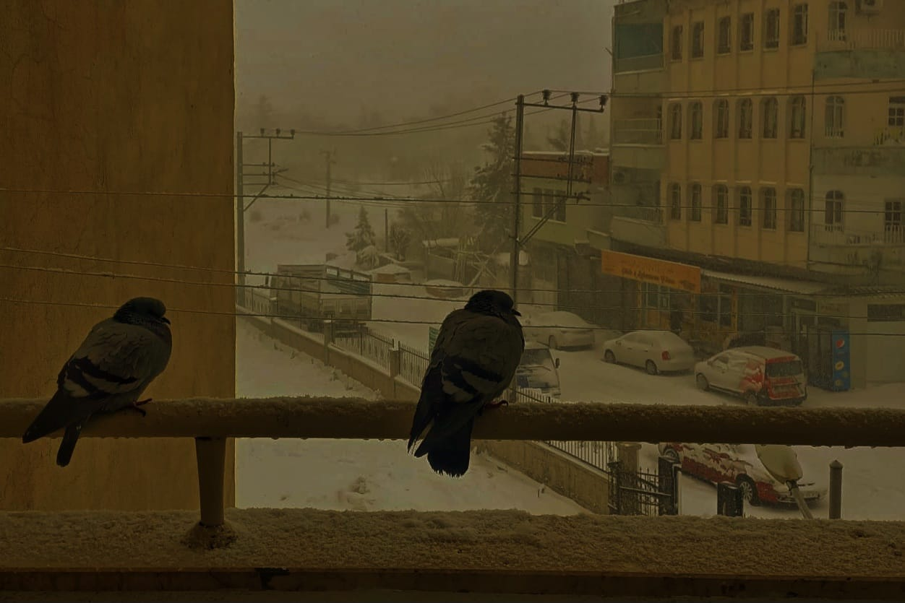
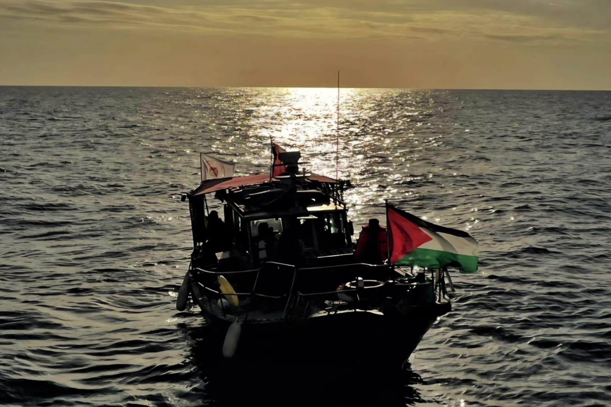

Blog
Akademik & Araştırma Yazıları
Akademik & Araştırma Yazıları



Aynanın Öte Yakası
- Görünür İyilik, Toplumsal Bir Performanstır
- Kül ve Akdeniz: Bu Bir Rıza Yelkenidir
- Sudan'da İnsanlık Hâli: Kayıtsızlığın Epistemolojisi ve Etik Sorgulama
Edebiyat & Şiir
- Görünür İyilik, Toplumsal Bir Performanstır
- Kül ve Akdeniz: Bu Bir Rıza Yelkenidir
- Sudan'da İnsanlık Hâli: Kayıtsızlığın Epistemolojisi ve Etik Sorgulama